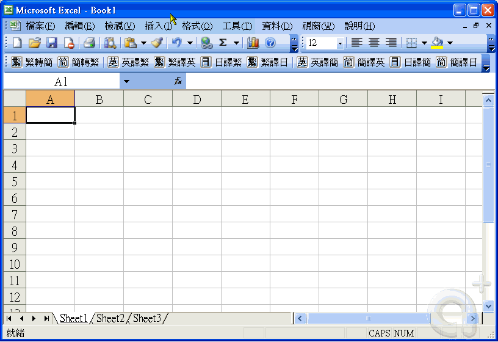
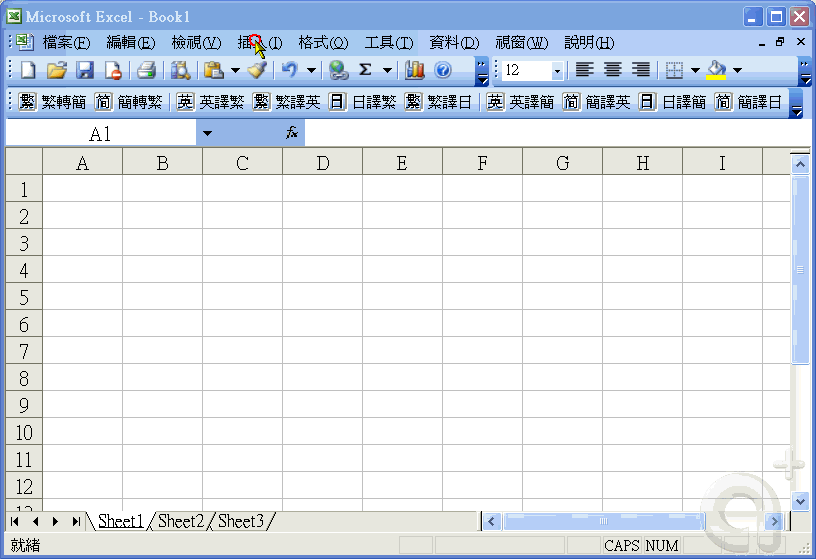

可以有二種方式：
須先從 AutoCAD 轉換為 中繼檔(*.wmf)或 點陣圖(*.bmp)格式後，
再到 Excel 使用插入檔案即可。
請依照需求選擇檔案格式:
■ 中繼檔(*.wmf) → 透明背景、檔案容量小、解析度較好，出圖品質最好。
■ 點陣圖(*.bmp) → 白色背景、檔案容量大、解析度較差，出圖品質不好。
步驟如下:
1.AutoCAD「檔案」功能表：→「匯出」....格式為中繼檔(*.wmf)或點陣圖(*.bmp)。


2.Excel「插入」功能表：→「圖片」→「從檔案」....選擇中繼檔(*.wmf)或點陣圖(*.bmp)。


👇可用出圖有比例，詳解可參考課程👇
[私房教學2-7]AutoCAD Dwg檔匯出至Office運用